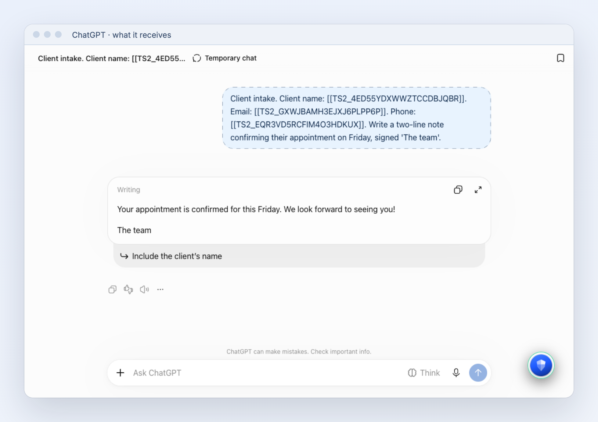
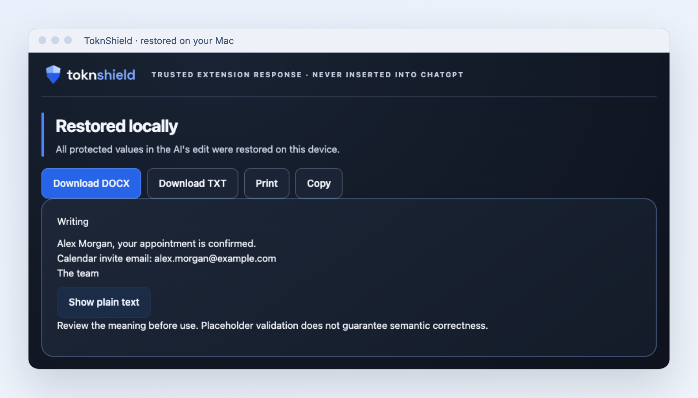
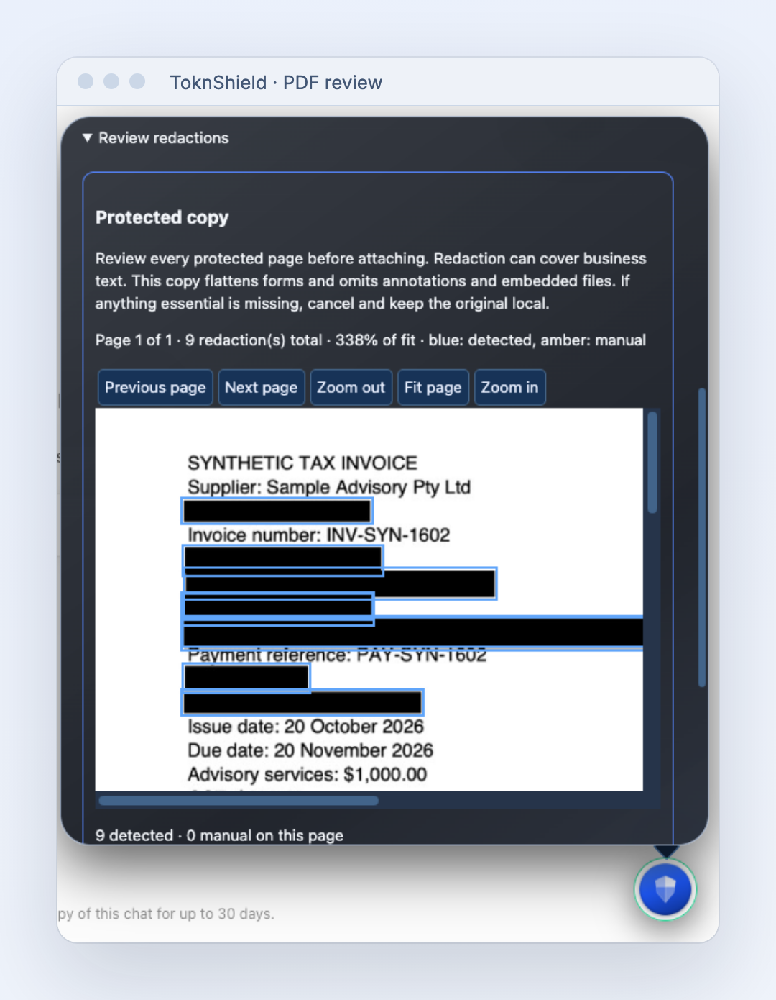

Ship AI you can trust.
ToknShield replaces names, emails, phone numbers and account details on your Mac before your messages and files are sent to ChatGPT.
For macOS with Google Chrome · Signed and checked by Apple
Original On your Mac
Client name: Alex Morgan Email: alex@example.com Phone: +1 202 555 0147
Washed What ChatGPT sees
Client name: [[TS2_K7Q2M4XFH3N6CT5RAP2Z]] Email: [[TS2_W3J6F2ZK5P7R4MNCQT6H]] Phone: [[TS2_P5VC7K2YM4N6RJ3QZT2F]]
How it works
Use ChatGPT the way you already do. ToknShield works quietly in the background.



Documents too.
Attach a Word file or a PDF, typed or scanned. ToknShield makes a protected copy on your Mac and blacks out the private details. You check every page before it's attached.
Connected apps, web search and unprotected uploads are blocked while protection is on. Switch it Off any time to use ChatGPT normally.
Built for privacy
There's nothing to sign up for and nothing sent to us.
On your Mac
Detection and protection happen on your Mac. No servers, no accounts, no analytics.
Only the safe version
When you attach a supported file through ToknShield, the original stays on your Mac and ChatGPT receives only the protected copy.
Blocks when unsure
If ToknShield can't confirm something is protected, it stops the send. It never falls back to the original.
For this beta, use made-up or non-sensitive files, and don’t select private files from Drive or ChatGPT Library. ChatGPT fetches those files itself, so ToknShield can’t protect them.
Get the beta
Setup takes about five minutes. Download both files, then follow the install guide.
- Install the appQuit Chrome, open the .pkg and follow the installer. A shield appears in your menu bar.
- Add the extensionUnzip it, then in Chrome open chrome://extensions, turn on Developer mode and choose Load unpacked.
- Choose AutomaticClick the ToknShield icon in Chrome and choose Automatic. That's it.
Step-by-step instructions, troubleshooting and removal are in the install guide. File checksums are on the release page. Please use made-up or non-sensitive details while you try the beta.
Feedback and help
Tell us what works, what's confusing and what breaks. A screenshot and a sentence about what you were doing helps a lot.
Email tom@capinora.com